Problem & Goals
Introducing the Pizza Detector
Ever wonder if there is pizza in your immediate surroundings? Consider the following scenario — you're at a party and you've had one too many libations. Things start to get kind of fuzzy... is that pizza or seven layer dip in front of you? It can be hard to tell, right?! Or let's say you find yourself in a TGI Fridays (completely ironically of course) and order a 'BBQ Chicken Flatbread Pizza' and you ask yourself "but is this really pizza?". Maybe you are currently on an all pizza diet and you're just tired of constantly mentally assessing whether food items are pizza or not. Or maybe you just really love pizza and think it would be silly but fun to detect pizza from, well, photos of pizza.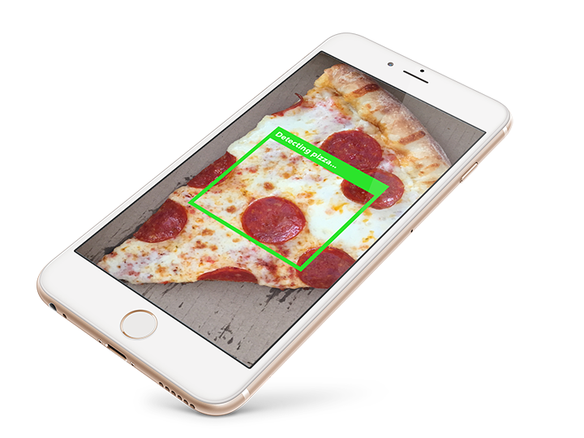
Okay but seriously...
Jokes aside, the actual goal of this project is to first create a tool that recognizes a specific food from a single image. A longer-term goal would be to recognize many other foods and then ultimately predict calories and other nutritional information from a photo. The use cases for this are pretty self-explanatory — tracking food intake for weight loss or managing medical conditions (i.e. diabetes, food allergies, etc.) can be fairly labor intensive (and frankly annoying) as it usually requires manually entering nutritional information into a food tracking app. Because of this, most people don't stick with tracking their food intake for very long. Studies show tracking food intake can potentially lead to long-term weight loss success, improving related health problems. An app that calculates nutritional information from photos of food would make the tracking process much easier and fun, thus increasing the odds people adhere to tracking their food intake long term.Data Source
The images in the dataset were downloaded from another image recognition project, The Food-101 Data Set, and incorporated additional images from yet another image recognition project, ImageNet. From these data sources, I created two sets of images — 2,000 images of pizza and 2,000 images of non-pizza food items. Within each set, I used 1,600 images to "teach" the model what pizza looks like and then use the other 400 unseen images to test whether the model has truly learned what pizza looks like.

Data Cleaning & Manipulation
The data is image based in the form of pixels which are the smallest unit of information that make up an image on a digital display. I adjusted for differences in lighting and resized all the images to have the same dimensions. I also explored aspects of color in the pizza versus non-pizza images. This required some data manipulation to extract the information in the pixels of the images.
Exploratory Data Analysis
Below is an exploration of the relationship between color, hue, saturation, and brightness in the pizza versus non-pizza images.
RGB color space
Color images displayed on digital devices are made up of three colors — red, green, and blue. Every pixel in an image will consist of each color in some proportion to make up millions of different color combinations. For example, looking at the image of pizza below, the image can be separated into its red, green, and blue color components.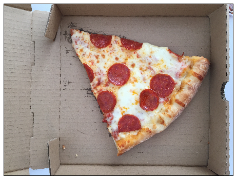
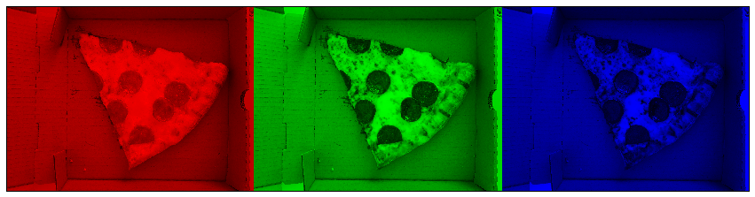
To see if color is a good predictor of pizza, I looked at the red, green, and blue color components of all the pizza images versus all the non-pizza images. Since the RGB distribution plots below look quite similar for both pizza and non-pizza images, color is not a reliable predictor of pizza.
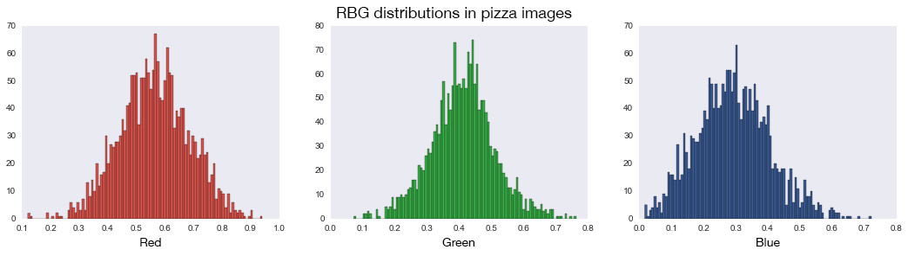
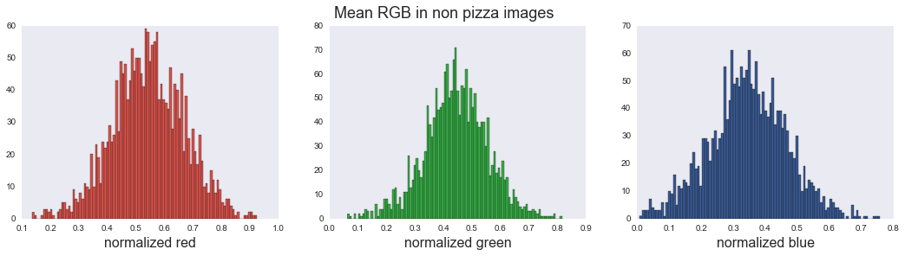
HSV color space
I also looked at another color space — HSV which stands for hue, saturation, and value — also called HSB (B for brightness). Because HSV separates color (hue) information from intensity (saturation) and lighting (value) it's often used because the information is less noisy than RGB information (since most of the noise in photos is from differences in light). An example of what this color space looks like: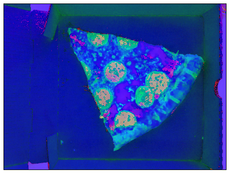
Along the same lines as the red, green, and blue color exploration above, I compared the hue, saturation, and brightness in pizza versus non-pizza images to see if there are any differences — and like before, there is really no difference.
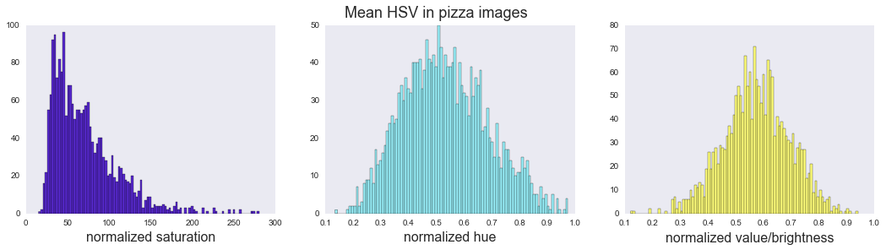
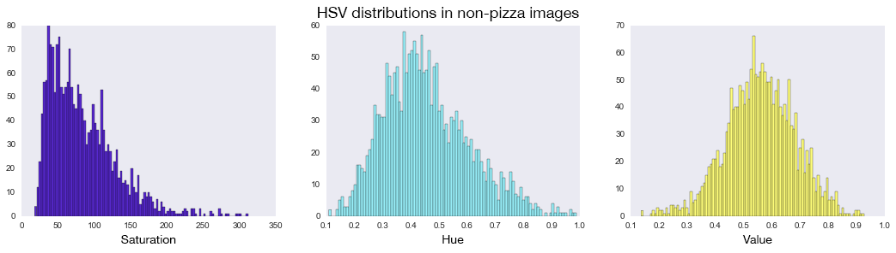
Overall the exploratory data analysis conveys that recognizing objects in images based on pixels, essentially imitating the highly granular functionality of the human eye and brain, can't be based on something as simple as color alone and supports the use of a more complex modeling technique.
Image Preprocessing
The goal of image preprocessing is to apply random transformations to the images so the model can "learn" instead of purely memorizing the pixels in the images. For example, if the model only saw images of pizza with the crust oriented left, the model may not be able to properly detect images of pizza with the crust oriented right.
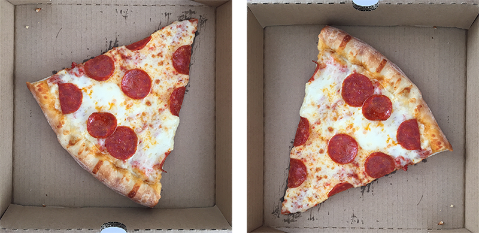
Doing this allows the model to account for natural variation in orientation, rotation, and perspective in the images by randomly flipping and rotating the images during the model's learning phase. Below is an example of what these transformations look like:
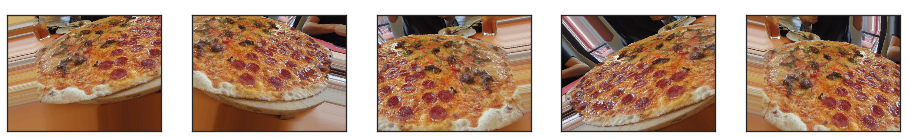
Pizza Classification Model
Recognizing pizza in an image is difficult because the same object can vary in position, angle, lighting, etc. Part of the image can be hidden as well as there is background clutter to deal with. With all this information being represented in the image, using more simple modeling techniques that look at individual pixels as features in isolation won't work.
To recognize pizza in an image what is needed is a way to understand and retain the information regarding the relationship between pixels in a more flexible way. A convolutional neural network (CNN) analyzes small parts of the image, over and over again, in effect, creating a library of all the possible distinctive features that make up pizza but in a way that's independent of the object's orientation in space.
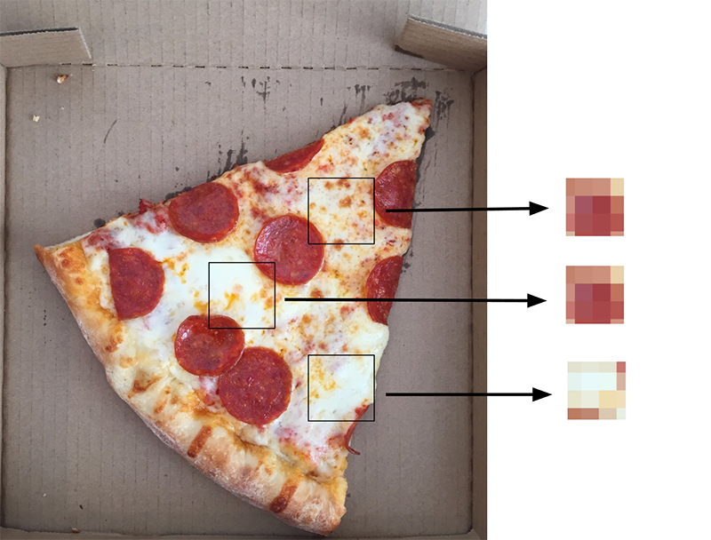
The whole process can be visualized as a series of steps (really a stack of layers) that are repeated many times. For the sake of simplicity, the convolutional layer essentially creates many snapshots of the different possible key features in identifying pizza. There's an intermediary layer (ReLU) that performs a mathematical operation that keeps the feature’s voting strength on an appropriate scale. The pooling layer takes the many possible features created in the convolutional layers and shrinks them down to only the most significant features. The final step (layer) is the voting step, where key features in the image vote to determine whether the image contains pizza.
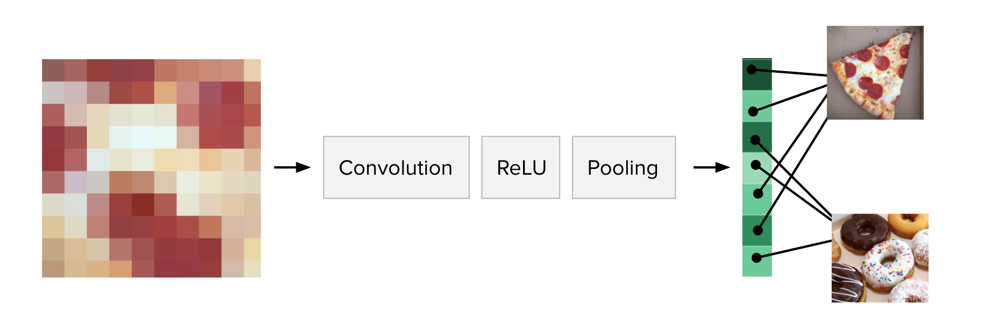
Results
The model is able to detect pizza in the test image set with 88% accuracy which is excellent considering the relatively small amount of images the model is trained on.
The learning process
Something interesting to note when it comes to neural networks is that they are trained over many "epochs" which are essentially learning cycles. More specifically, when the neural network is initially presented with an image it makes a random guess as to whether or not it is an image of pizza. It then sees how far this guess was from the actual answer and makes the appropriate adjustments to the network/model. This process can be visualized in the plots below, where the accuracy increases after each epoch while the loss (error) decreases. The sharp jump around epoch 50 is where the model made a large error (for example, misclassified a non-pizza image as pizza).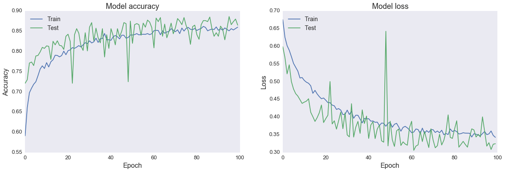
Receiver Operating Characteristic (ROC) curve
The ROC curve is a fairly standard plot that illustrates the ability of a model to separate two classes. This plot shows when the actual class is pizza, how often the model predict pizza (the true positive rate on the y-axis) versus when the actual class is not pizza, how often the model incorrectly predict pizza (the false positive rate on the x-axis). A model that does a good job separating classes will have a curve that hugs the upper left corner — depicting the ratio of how often the model is right versus wrong is better than simply guessing.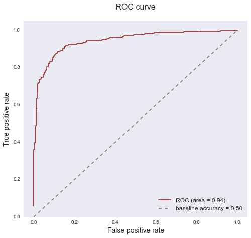
Misclassified vs most "pizza" images
Below are images the model predicted with the highest probability to be pizza but that are, in fact, not pizza, as well as images the model predicted with the highest probability to be pizza and are actually pizza. Some of the misclassified images are a bit perplexing (for example, the donuts) as to why the model may have labeled them pizza but others (for example, the buffalo wings) are slightly more understandable in their potential "pizza" resemblance as they could possibly be understood by the model as pizza toppings, etc. The images the model predicted with the highest probability to be pizza and are pizza are fairly canonical pizza images and it's pretty cool that the model can even detect uncooked pizza (see the far left image in best pizza predictions).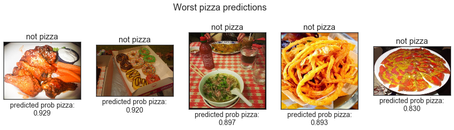
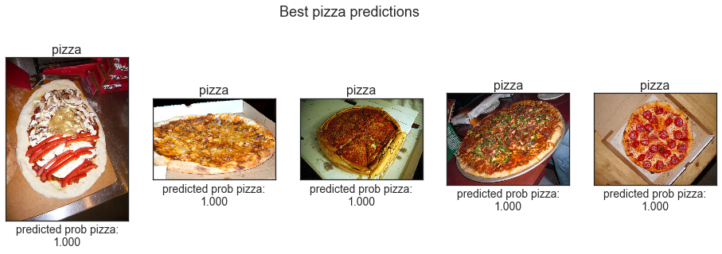
Summary
Convolutional neural networks are currently the best way to solve AI image classification problems. Attempting to build a pizza detector with simpler modeling methods would be very challenging. Overall, the model performs very well, with an 88% accuracy in detecting pizza in an image. To further improve model performance, the model layers could be fine-tuned and additional tweaks to the random transformations of the training set could be made to better equip the model to handle the natural variances in images of pizza.
I suspect there is some overfitting (i.e. the model is memorizing the data to some extent) because my pool of images is rather small. Ideally, the model would be trained on hundreds of thousands of photos. But in practice, this is unnecessary as other pre-trained image classification models exist, which have been trained on millions of images. Another area of improvement is a more comprehensive exploration of the images in the dataset — aspects to explore in the image data are expanding on color (i.e. variance in color), texture, shape, etc. Visualizing what features the network is identifying as important in detecting pizza would also be interesting. Furthering this idea, for example, would be to more deeply examine misclassified images to try to discover patterns to illuminate how pizza in images can better be detected.
For building the image-based calorie predictor, using a pre-trained model with transfer learning, in which model trained on one task is reused on a second related task, is the only feasible way to go about this. From there, other issues such as estimating food quantity in the image is another large challenge to overcome.
UPDATE: I explore the idea of transfer learning and other ideas mentioned in this analysis further in my Data Science master's degree research.